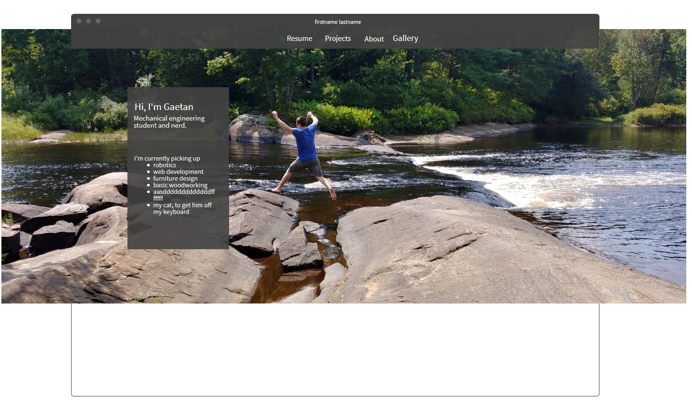
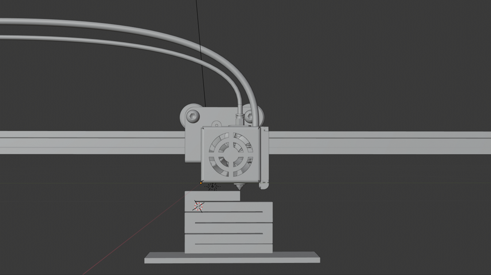

I decided to make a website.
I was barely literate in HTML, CSS, and JavaScript, but I had a secret weapon: the internet. I also have a friend who is an incredible web developer, though he probably doesn't want credit for helping me learn this. Or to be mentioned on any website I make...

My original idea for the site was completely different. I liked this picture and thought it would make a good starting point. It made a decent home page, but it didn't lead anywhere when I tried to come up with ideas for the other pages. That is, I had no ideas for the other pages.
I decided to start over and move away from a single background image. It didn't scale well, and I had to jump through a lot of hoops to get a result I was happy with. Instead, I put a model of my 3D printer (a CR-10) on the home page without using it as the background. I am a big fan of 3D printing, and I wanted this page to show off my 3D modeling skills.
Fun fact: in an earlier draft, the printer would move across the screen and "print" as you scrolled. This took a few dozen clever div elements and far too much time. I eventually scrapped the idea because it refused to scale well and was quickly becoming a time sink.

With the basic layout in place, I needed a color palette. Color is not my strong suit, but my friend recommended a few good sites, and I eventually found a palette that fit.

I had actually modeled most of the printer before deciding to use only the print head for my "logo." I was also designing an enclosure for the printer and used this model to check clearances, so the extra work didn't go to waste.
All that was left was to export it to Blender and set it up for rendering.

With that finished, I added the assets to the site, and it really started to come together. After finishing the home page, I felt it had too much empty space, so I rendered some of my other projects to fill it and give visitors a better sense of who I am.

With the home page mostly complete and a clear path for the rest of the site, I began blocking out the other pages and got to work coding.

This is normally where you would showcase the final product, and it feels odd not to, so here is a link to my website.